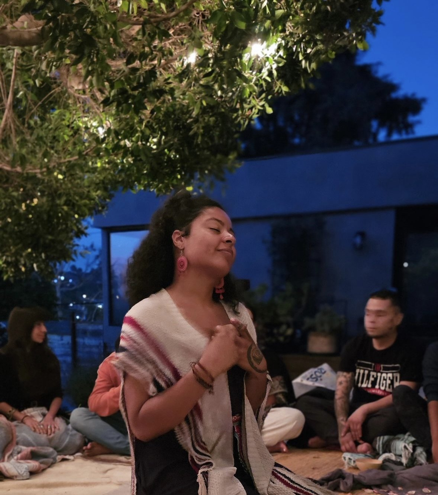

How do we tend what we have inherited so that life may continue through us with greater beauty, health, and reciprocity than it did before?¿Cómo cuidamos lo que hemos heredado para que la vida continúe a través de nosotras con mayor belleza, salud y reciprocidad de la que tenía antes?
This question lives at the heart of Madre y Agua.Esta pregunta vive en el corazón de Madre y Agua.
Nothing grows alone.Nada crece en soledad.
We are shaped by our bodies, our families, our communities, our ancestors, the land beneath our feet, and the living world that sustains us.Nos moldean nuestro cuerpo, nuestra familia, nuestra comunidad, nuestros ancestros, la tierra bajo nuestros pies y el mundo vivo que nos sostiene.
Through food, herbs, beauty, story, song, seasonal living, ritual, and community care, Madre y Agua returns again and again to the ordinary places where life is carried. These ordinary acts become places where remembrance, reciprocity, and participation take root.A través de la comida, las hierbas, la belleza, la historia, el canto, el vivir con las estaciones, el ritual y el cuidado comunitario, Madre y Agua vuelve una y otra vez a los lugares ordinarios donde se lleva la vida. Estos actos ordinarios se vuelven lugares donde la memoria, la reciprocidad y la participación echan raíces.
- Cooking becomes kinship.Cocinar se vuelve parentesco.
- Gathering becomes care.Reunirse se vuelve cuidado.
- Beauty becomes nourishment.La belleza se vuelve alimento.
- Ritual becomes rhythm.El ritual se vuelve ritmo.
- The ordinary becomes the place where life is carried forward.Lo ordinario se vuelve el lugar donde la vida se lleva adelante.
Healing is one way life continues. It emerges as we learn to care for what has been entrusted to us, with greater attention, greater tenderness, and greater responsibility.La sanación es una forma en que la vida continúa. Surge a medida que aprendemos a cuidar lo que se nos ha confiado, con mayor atención, mayor ternura y mayor responsabilidad.
Every way of seeing has a story.Toda forma de ver tiene una historia.
Madre y Agua grew from years of listening to family, plants, kitchens, waters, teachers, and lived experience.Madre y Agua creció de años de escuchar a la familia, las plantas, las cocinas, las aguas, las maestras y la experiencia vivida.
If you’re curious about the path that shaped this work…Si sientes curiosidad por el camino que dio forma a este trabajo…
Meet NicholeConoce a Nichole

I’m Nichole Elana, a first-generation Colombian-American raised along California’s Pacific coast, where ocean has always felt like memory.Soy Nichole Elana, colombiana-americana de primera generación, criada en la costa del Pacífico de California, donde el océano siempre se ha sentido como memoria.
My roots stretch from the Afro-Colombian Pacific and the Andes to the Cherokee homelands of the Southeastern United States and the folk traditions of my Swedish-German lineage.Mis raíces se extienden desde el Pacífico afrocolombiano y los Andes hasta las tierras Cherokee del sureste de los Estados Unidos y las tradiciones populares de mi linaje sueco-alemán.
Across those lineages, care was rarely separate from daily life. It lived in simmering pots, flower baths, herbal remedies, songs carried to the water, celebrations, grief, and the quiet ways people sustained one another through changing seasons.En todos esos linajes, el cuidado rara vez estaba separado de la vida diaria. Vivía en ollas a fuego lento, baños de flores, remedios herbales, cantos llevados al agua, celebraciones, duelo, y las formas silenciosas en que las personas se sostenían unas a otras a través de las estaciones cambiantes.
Those inheritances became the beginning of my own path.Esas herencias se volvieron el comienzo de mi propio camino.
For more than a decade, I have studied herbalism, nourishment, ritual arts, and community care. Just as deeply, this work has been shaped by lived experience, through my own relationship with womanhood, fertility, illness, ancestry, creativity, loss, love, and becoming.Durante más de una década, he estudiado herbolaria, nutrición, artes rituales y cuidado comunitario. Con la misma profundidad, este trabajo ha sido moldeado por la experiencia vivida, a través de mi propia relación con la feminidad, la fertilidad, la enfermedad, la ascendencia, la creatividad, la pérdida, el amor y el devenir.
Over the years, I began to recognize the threads weaving through it all.Con los años, comencé a reconocer los hilos que se entretejían a través de todo.
- FoodComida
- FlowersFlores
- WaterAgua
- StoryHistoria
- RhythmRitmo
These became the foundation of Madre y Agua, a place where the everyday and the ceremonial meet, and where the ritual arts of living in relationship continue to unfold.Estos se volvieron el fundamento de Madre y Agua, un lugar donde lo cotidiano y lo ceremonial se encuentran, y donde las artes rituales de vivir en relación continúan desplegándose.
Today, I continue following those threads, exploring how we care for what we have inherited while cultivating what wishes to emerge.Hoy, sigo esos hilos, explorando cómo cuidamos lo que hemos heredado mientras cultivamos lo que desea emerger.
Walk With MeCamina Conmigo

This work is an invitation, not a destination.Este trabajo es una invitación, no un destino.
An invitation to remember what sustains life.Una invitación a recordar lo que sostiene la vida.
- Relationship with the body and its rhythms.Relación con el cuerpo y sus ritmos.
- Relationship with food and the stories it carries.Relación con la comida y las historias que carga.
- Relationship with beauty, pleasure, creativity, and expression.Relación con la belleza, el placer, la creatividad y la expresión.
- Relationship with ancestry and inheritance.Relación con la ascendencia y la herencia.
- Relationship with place.Relación con el lugar.
- Relationship with community.Relación con la comunidad.
- Relationship with the seasons and cycles that shape a life.Relación con las estaciones y los ciclos que dan forma a una vida.
- Relationship with the living world itself.Relación con el mundo vivo mismo.
Whether you’re here to explore a private consultation, join a gathering, read a story, or simply linger for a while, you’re welcome here.Ya sea que estés aquí para explorar una consulta privada, unirte a un encuentro, leer una historia, o simplemente quedarte un rato, eres bienvenida aquí.